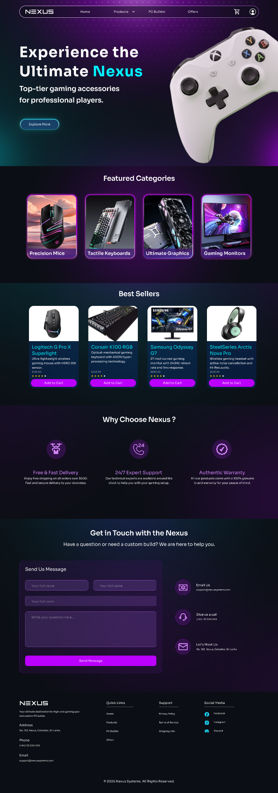
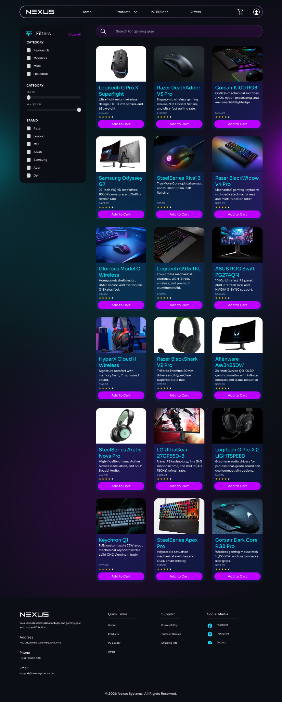
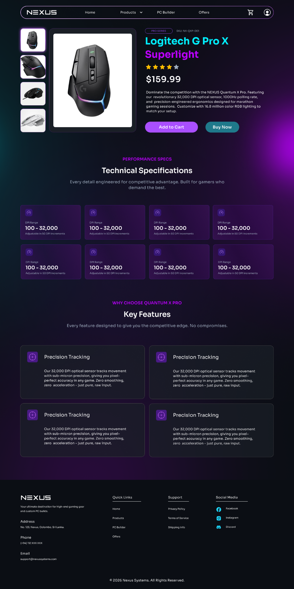
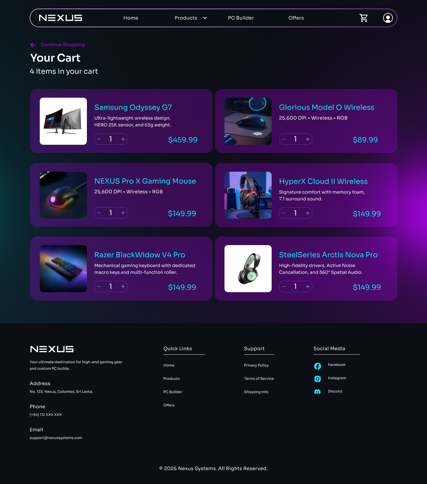
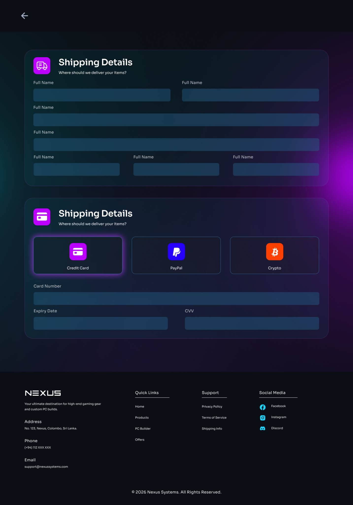
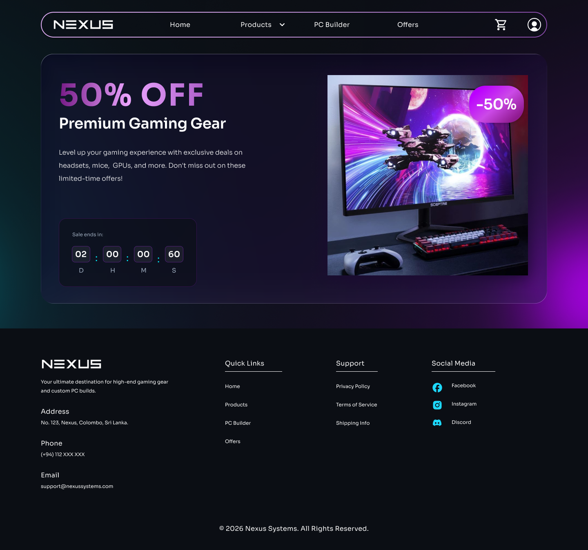
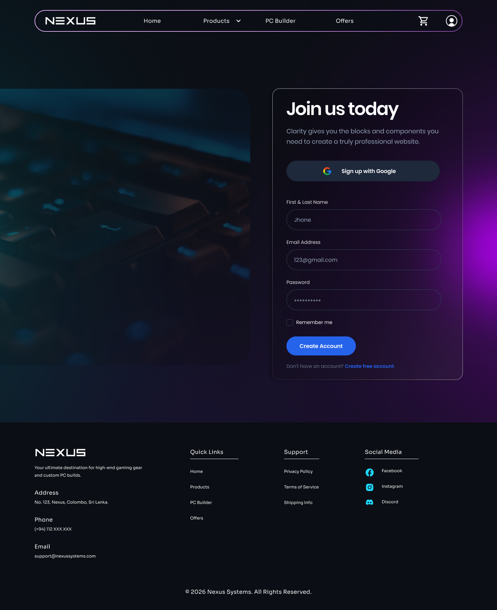
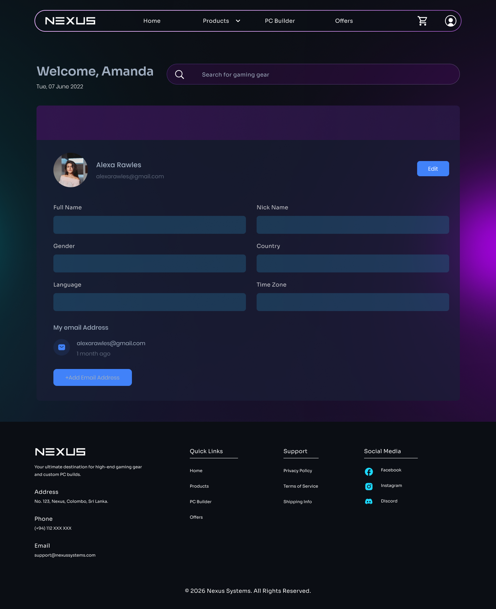

UI/UX CASE STUDY · E-COMMERCE WEBSITE
NEXUS
A gaming-focused e-commerce website concept designed to make discovering gear, exploring product details, managing a cart and completing checkout feel clear and visually engaging.
Explore Final UI ↓
01 · OVERVIEW
A focused store experience for gaming gear.
NEXUS is a desktop e-commerce UI concept for gaming accessories and hardware. The experience connects product discovery, filtering, product details, offers, cart management, checkout and user account screens within one consistent interface.
02 · THE CHALLENGE
Make a large product journey feel easy to navigate.
A gaming store can contain many categories, products, specifications, prices and promotional content. The design challenge was to organize that information without losing the energetic visual identity expected from a gaming brand.
Design focus: product discoverability, readable specifications, strong calls to action, consistent navigation and a straightforward purchase flow.
03 · SOLUTION
A connected shopping flow with clear actions.
Product Discovery
Featured categories, best sellers, search and filters help users find relevant gaming products quickly.
Product Details
Product imagery, pricing, ratings, technical specifications and key features support purchase decisions.
Cart & Checkout
A structured cart and checkout experience keeps quantities, shipping details and payment choices easy to understand.
Account Experience
Sign-up and profile screens extend the visual system into personal account management.
04 · DESIGN PROCESS
From store structure to a complete visual experience.
Understand
Identify the main actions users need when browsing and purchasing gaming products online.
Structure
Organize the experience around home, product listing, product details, offers, cart, checkout and account flows.
Design
Create a consistent dark interface using reusable cards, gradients, rounded containers and strong product imagery.
Refine
Keep navigation, hierarchy and calls to action visually consistent across the complete desktop experience.
05 · VISUAL SYSTEM
Dark, energetic and built around gaming culture.
The interface combines deep black and blue surfaces with electric cyan and neon purple accents. Rounded cards, gradient backgrounds and high-contrast product imagery create a recognizable gaming aesthetic while keeping content hierarchy clear.
#090D13Base#102B3DSurface#00D9EECyan Accent#BD00FFPurple Accent06 · FINAL UI
Key screens from NEXUS.
The final interface follows the main e-commerce journey—from discovering products and reviewing specifications to cart, checkout, offers and account management.







07 · OUTCOME
A cohesive e-commerce concept across the complete shopping journey.
The final UI connects product discovery, detailed product evaluation, promotional content, cart management, checkout and account screens through one consistent visual system. The concept can be taken further through responsive mobile design and usability testing.